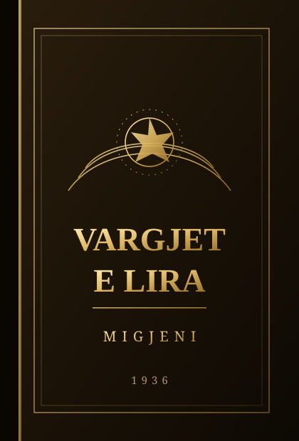

1936
Vargjet e lira
Përmbledhja e vetme e botuar në jetën e autorit. Solli në letërsinë shqipe vargun e lirë dhe zërin e njeriut të thjeshtë që vuan e shpreson.
1936 — 1970 · Dy breza, një zë
Nga vargu i lirë që thyen heshtjen e viteve ’30, deri te poezia e Nënë Shqipërisë dhe proza e Komisarit Memo — dy shkrimtarë që formësuan ndërgjegjen e një kombi.
Dy krahë të së njëjtës zog
Fjalë që mbeten
Kur të më shikosh në sy, mos kërko mëshirë — kërko të vërtetën.
Migjeni
Nënë Shqipëri, ti m’i dhe dritën dhe e bëre jetën këngë.
Dritëro Agolli
E bukura e jetës qëndron në gjërat e vogla të përditshme.
Migjeni
Atdheu nuk është vetëm tokë — është njeriu që e do atë.
Dritëro Agolli
Migjeni hapi derën drejt lirisë së fjalës; Agolli e mbajti atë hapur për gjysmë shekulli. Së bashku, ata përbëjnë shtyllat e letërsisë moderne shqipe — një testament që lexohet ende sot.